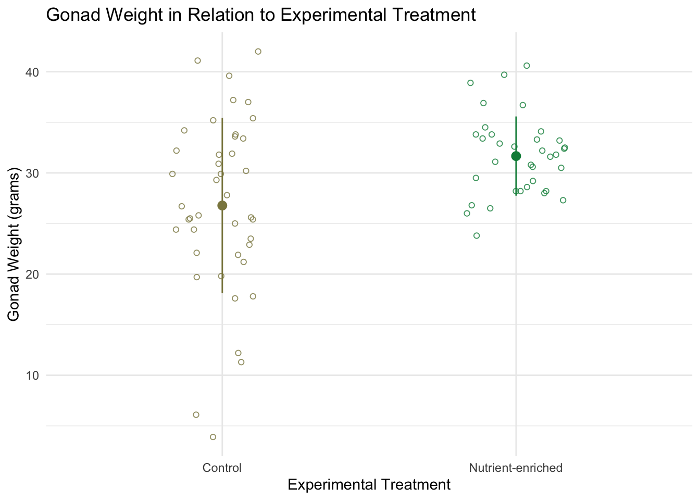
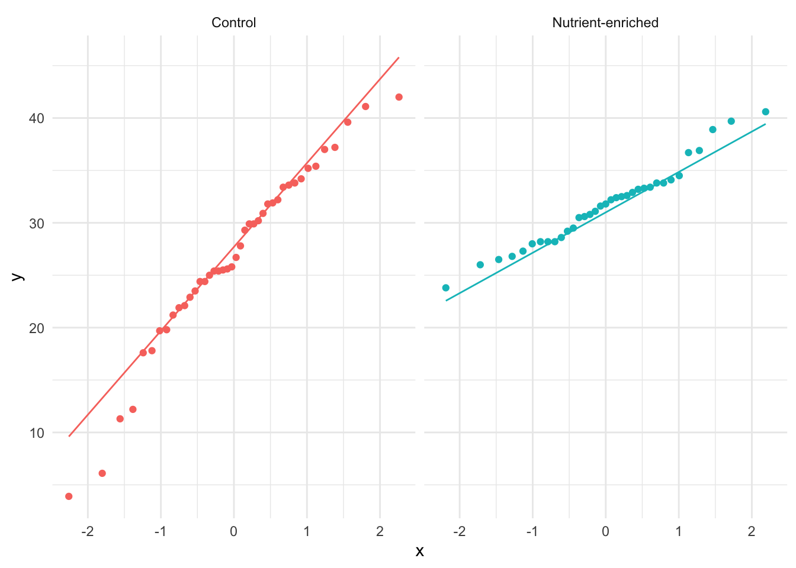

# library function loads in packages
library(tidyverse)
library(janitor)
library(effectsize)Statistics for Environmental Studies: Homework 2
R/R Studio
Here is my code and annotations for my statistics class homework
Comparing mean urchin gonad weights between nutrient-enriched urchins vs non-nutrient enriched urchins
To effectively compare the nutrient-enriched and non-nutrient enriched urchins, I had to clean the data, summarize the data, visualize the data, perform analysis, and then communicate the results. Below is all the code involved along with my annotations on the reasoning for each section.
Loading in packages
To start out I load in three packages that will help me with my analysis.
Bringing in data
I then bring in the urchins data using the read_csv function.
# we are bringing in the urchin-expirement-data.csv
# using the read_csv function and storing it as an object called 'urchins'
urchins <- read_csv("urchin-experiment-data.csv")Cleaning the data
Next, I clean the urchins data to make it easier to analyze and to improve some of the column names. Cleaning the data includes making all the column names lower case and replacing spaces between names with underscores. In addition, I expanded the treatment names “c” and “n” to be their full names of “Control” and “Nutrient-enriched”. Furthermore, I selected only the columns of interest for this analysis which includes the type of expiremental treatment, and the weight column. Finally, I dropped any rows with NA values.
# we are going to make changes to the urchins data and
# store it as urchins_clean object
urchins_clean <- urchins |>
# use clean_names function to make the column names lower case
# and underscores
clean_names() |>
# mutate column names to change the c and n designations to be
# Control and Nutrient-enriched
mutate(experimental_treatment = case_when(
experimental_treatment == "c" ~ "Control",
experimental_treatment == "n" ~ "Nutrient-enriched"
)) |>
select(experimental_treatment, weight_g) |>
# drop any na observations
drop_na(weight_g)
# display 10 random rows from the urchins_clean data frame
# using slice_sample()
slice_sample(urchins_clean,
n = 10,
by = NULL,
weight_by = NULL,
replace = FALSE)# A tibble: 10 × 2
experimental_treatment weight_g
<chr> <dbl>
1 Nutrient-enriched 30.5
2 Nutrient-enriched 32.6
3 Nutrient-enriched 30.8
4 Control 35.2
5 Control 42
6 Nutrient-enriched 33.4
7 Control 25.5
8 Control 33.8
9 Control 25.4
10 Control 21.2Obtaining summary statistics
Here I create an object to store summary statistics in order to be able to display these summary statistics in the visualization that I am going to create in the next code chunk!
# store urchins_clean summary data as the object urchins_summary
urchins_summary <- urchins_clean |>
# group by the treatment type
group_by(experimental_treatment) |>
# beging summarizing both treatment types
summarise(
# calculate mean gonad weight
mean_weight = mean(weight_g),
# summarise number of observations per treatment type
n = n(),
# calculate standard deviation for gonad weight
sd_weight = sd(weight_g)
)
# display urchins_summary data frame
urchins_summary# A tibble: 2 × 4
experimental_treatment mean_weight n sd_weight
<chr> <dbl> <int> <dbl>
1 Control 26.8 42 8.67
2 Nutrient-enriched 31.7 35 3.91Creating a data visualization
I created a figure in order to visually compare the differences in urchin weight between the two treatment groups. I displayed the mean urchin gonad weights and standard deviations for the two urchin treatment groups. In addition, I displayed all the underlying data using a jitter plot. I set the colors for the “Control” and “Nutrient-enriched” groups manually. In addition, I changed the axis titles and main title using the labs function. Furthermore, I changed the theme of the figure from the default using theme_minimal.
# base layer is ggplot
# data is urchins_clean
ggplot(data = urchins_clean,
# experimental treatment on the x axis
# gonad weight (grams) on the y axis
# coloring the points based on experimental treatment type
mapping = aes(x = experimental_treatment,
y= weight_g,
color = experimental_treatment
)) +
# first layer is a jitter plot
geom_jitter(
# width is set to 0.15 to tighten the horizontal jitter
width = 0.17,
# height is set to 0 so that there is no vertical jitter
height = 0,
# open circle point shape for jitter points
shape = 21,
# increasing transparency so that it is easier to see the mean
alpha = 0.8
) +
# adding a point that is the mean weight of each group
# using urchins_summary data
geom_pointrange(data = urchins_summary,
# points displayed based on experimental treatment type
mapping = aes(x = experimental_treatment,
# mean weight is the y value
y = mean_weight,
# upper bound is the mean plus
# a standard deviation
ymax = mean_weight + sd_weight,
# lower bound is the mean minus
# a standard deviation
ymin = mean_weight - sd_weight)) +
# manually setting colors for the treatment groups
scale_color_manual(values = c("Control" = "khaki4",
"Nutrient-enriched" = 'springgreen4')) +
# changing axis labels and title
labs(x = "Experimental Treatment",
y = "Gonad Weight (grams)",
title = "Gonad Weight in Relation to Experimental Treatment"
) +
# changing theme from default theme to theme_minimal
theme_minimal() +
# removing the legend
theme(legend.position = "none")
Writing the hypothesis
Below I write out the null and alternative hypothesis for comparing the mean urchin gonad weights between the two groups. I wrote these hypothesis in statistical formating.
H[0]: There is no difference in mean urchin gonad weight between the Control group (mean = 26.8), and the Nutrient-enriched group.
H[A]: There is a difference in mean urchin gonad weight between the Control group (mean = 26.8), and the Nutrient-enriched group.
Assesing normality of the response variable
To asses the normality of the gonad weight variable between the two groups I created qq plots.
# base layer is ggplot
ggplot(data = urchins_clean,
# set sample as weight
aes(sample = weight_g,
# set color based on treatment
color = experimental_treatment)) +
# first layer is qq plot
geom_qq() +
# second layer is qq line
geom_qq_line() +
# seperate the two treatments into seperate graphs
facet_wrap(~experimental_treatment) +
# change theme from default
theme_minimal() +
# remove legend
theme(legend.position = "none") 
The gonad weight (g) variable is normally distributed as the points remain close to the qq line throughout most of the line with just some tail offs at the ends.
Looking at the QQ plot I would say that the variances are pretty similar but the control group likely has more variance due to its outliers at the lower tail end.
Comparing the variances of the response variable between the two groups
Next, I calculated the gonad weight variances for each group to manually calculate the F test value between the two groups. The F test will inform me whether the variances are equal or not, which will determine what type of t-test I perform.
# create object called var_gonad_weight to store variances for each group
var_gonad_weight <- urchins_clean |>
# group variance calculation by treatment
group_by(experimental_treatment) |>
# use summarise function and calculate variance
summarise(var = var(weight_g)) |>
# ungroup data frame
ungroup()
# calculate F test manually with outputed variances
75.2/15.3[1] 4.915033In this code chunk I calculate the F test value using the var.test function.
# F test of equal variance function
var.test(
# comparing variance of weight_g by expiremental_treatment group
weight_g ~ experimental_treatment,
# using urchins_clean data
data = urchins_clean
)
F test to compare two variances
data: weight_g by experimental_treatment
F = 4.9054, num df = 41, denom df = 34, p-value = 7.185e-06
alternative hypothesis: true ratio of variances is not equal to 1
95 percent confidence interval:
2.527793 9.330193
sample estimates:
ratio of variances
4.905405 # Ratio of variances is 4.9 indicating that the variances are not equal between the groupsPerforming statistical tests
Since I determined that the gonad weight variances were not equal between the “Control” and “Nutrient-enriched” I performed a Welch’s t-test of unequal variances.
# t.test is the t-test function in R
t.test(
# weight_g is the response variable based on the
# experimental treatment gorup
weight_g ~ experimental_treatment,
# using urchins_clean data
data = urchins_clean,
# to run a Welch's t-test of unequal variance, set variance equal to FALSE
var.equal = FALSE
)
Welch Two Sample t-test
data: weight_g by experimental_treatment
t = -3.2739, df = 59.238, p-value = 0.001774
alternative hypothesis: true difference in means between group Control and group Nutrient-enriched is not equal to 0
95 percent confidence interval:
-7.873119 -1.900214
sample estimates:
mean in group Control mean in group Nutrient-enriched
26.77619 31.66286 Next I performed a Cohen’s d analysis in order to determine how strong of an effect the treatment type had on mean gonad weight.
# performing a Cohen's d analysis
# cohens_d is the function in R
cohens_d(
# weight_g is the response variable,
# experimental_treatment is the predictor variable
weight_g ~ experimental_treatment,
# using urchins_clean data
data = urchins_clean,
# standard deviations are not pooled
# since the two groups have unequal variances
pooled_sd = FALSE
)Cohen's d | 95% CI
--------------------------
-0.73 | [-1.18, -0.27]
- Estimated using un-pooled SD.Communicating the results
After performing the Welch’s t-test of unequal variance, and Cohen’s d analysis, it is time to communicate the results!
We found evidence to suggest that nutrient-enriched seaweed has a moderate effect (Cohen’s d = -0.73) on mean gonad weight (g) between urchins fed the nutrient-enriched seaweed and urchins fed normal seaweed (Welch’s t-test, t(59.24) = -3.27, p = 0.0017, \(a\) = 0.05).
On average, urchins fed nutrient-enriched seaweeds (n = 35, mean = 31.66) had a mass 4.88 grams greater (95% confidence interval: [-7.87, -1.9]) than urchins fed non-enriched seaweed (n = 42, mean = 26.78).
The full homework
Here is the pdf of all of Homework 2: